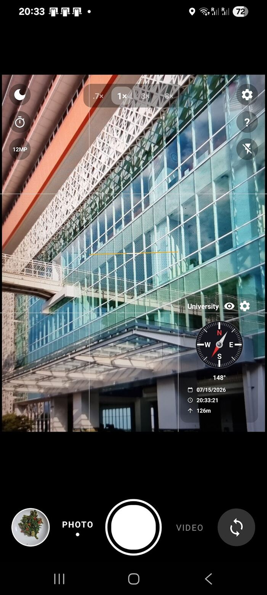
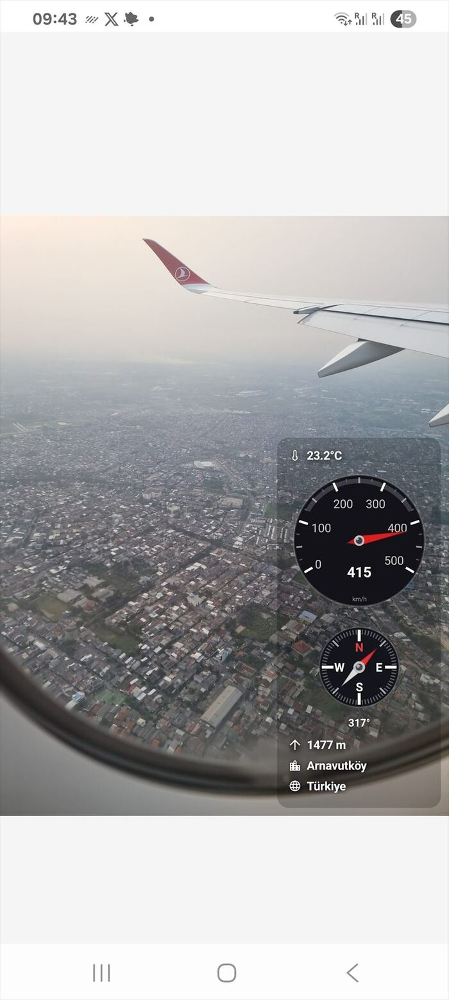
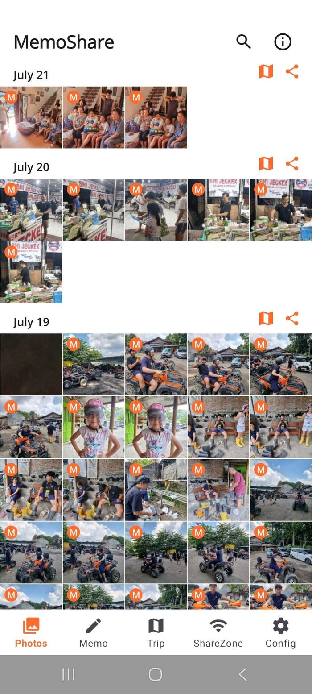
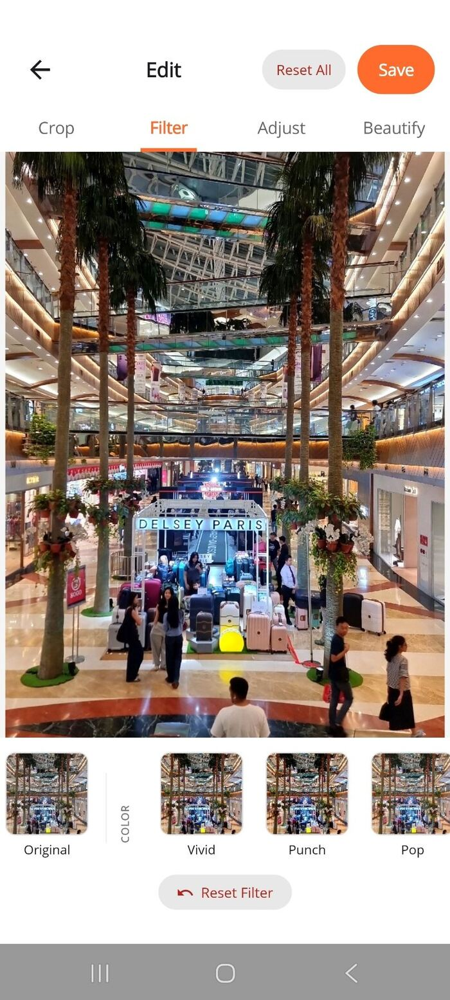

Signal & sensor data analysis
Acquisition, filtering, feature detection and evaluation of large multi-channel sensor recordings — the kind produced by inspection runs measured in hundreds of kilometres.
Germany
I build the desktop and mobile software that sits between hardware and the people who depend on it — acquisition, signal and image processing, analysis, and the 2D/3D visualization that makes a measurement finally make sense.
C# · .NET · WPF/MVVM · .NET MAUI · C++ · FPGA — from nanometre-scale MEMS research to a 1,224 km subsea oil & gas pipeline.
About
I am a software developer with a long track record in a microsystems research centre and, for the last 18 years, in one of the leading companies in the oil & energy industry. My work lives where hardware meets people: controlling instruments, ingesting their raw output, cleaning and analysing it, and rendering it so that an engineer can make a call with confidence.
At ROSEN I develop .NET applications for pipeline inspection — sensor data analysis and evaluation, image and signal processing, and high-performance 2D/3D visualization built on WPF and MVVM with DevExpress and SciChart. At IMTEK, University of Freiburg, I worked the other side of the same problem: FPGA hardware to talk to microsystem and MEMS sensors, and cross-platform C++ software with DirectX/Direct3D to visualize what they measured.
Outside of work I run Cekli, a small independent studio where I design and ship Android apps with .NET MAUI, and I spend a lot of time on local AI infrastructure — running and tuning large language and video models on consumer AMD hardware, and using agentic coding workflows in real projects rather than in demos.
Expertise
A stack that reaches from the sensor register all the way up to the pixel on screen.
Acquisition, filtering, feature detection and evaluation of large multi-channel sensor recordings — the kind produced by inspection runs measured in hundreds of kilometres.
High-density, high-performance charting and 3D rendering that stays responsive with millions of points — using DevExpress, SciChart and Direct3D.
Maintainable line-of-business and scientific desktop software in C# — WPF with MVVM, WinForms modernisation, and architecture that survives a decade of feature growth.
Shipped Android apps built on .NET MAUI and SkiaSharp — camera pipelines, EXIF and metadata handling, custom rendering, and the OEM-fragmentation work that real devices demand.
FPGA development and C++ drivers that let software talk to instruments — including LabVIEW-compatible C++ and cross-platform builds for Windows, Linux and macOS.
Running large language and video models locally on consumer GPUs, tuning inference for throughput and memory, and building agentic development workflows that hold up in production repositories.
Experience
ROSEN Group
Software development in C# on the .NET framework and .NET Core — WPF, MVVM and WinForms — for pipeline sensor data analysis, data evaluation, image processing, signal processing and visualization. Advanced GUI work with libraries such as DevExpress and SciChart significantly improved 2D and 3D visualization and the overall user experience for inspection analysts.
IMTEK — Department of Microsystems Engineering, University of Freiburg
Worked on several projects in the microsystem/MEMS field. Developed FPGA hardware to enable communication with software, and software for sensor data visualization and analysis with 2D and 3D rendering via DirectX/Direct3D. C++ with wxWidgets kept the software compilable on Windows, Linux and macOS; LabVIEW-compatible C++ code simplified hardware usage for researchers. Work from this period is published in IEEE Xplore.
Karlsruhe University of Applied Sciences
The foundation for everything above: systems thinking, numerical methods and a habit of verifying what the instrument actually reports.
Products
Simple apps that keep your data on your phone. No sign-in, no cloud, no tracking. Built solo with .NET MAUI.
A travel camera that writes the story into the photo. Location, weather, altitude, compass heading, speed and time are rendered live in the viewfinder and stored permanently in EXIF — so years later you still know exactly where you were.


A familiar photo gallery with three helpers that save hours: batch stamping, offline sharing and a genuinely readable grid. Companion to MemoCam, useful on its own.


Open source & research
Where I test the latest technology — mostly in .NET, increasingly in local AI.
A port that lets Maestro — a local AI video studio built for NVIDIA hardware — run on AMD GPUs through ROCm. Same quality, no fork of the upstream project and no extra dependencies, installable straight from Pinokio.
A .NET application for creating bar chart race animations from tabular data and exporting them as MPEG video — data visualization as a finished artefact rather than a screenshot.
A .NET desktop front-end for youtube-dl combining a downloader and an embedded web browser in one workflow.
A statistical forecast of all 104 matches: Elo ratings, Poisson goal modelling with the Dixon–Coles correction and 10,000 Monte Carlo simulations per fixture, wrapped in an interactive site where every match opens into probabilities and expected goals.
Peer-reviewed work from my years in microsystems engineering at IMTEK, indexed in the IEEE Xplore digital library.
An ongoing practical study of running near-frontier open models on a single consumer AMD GPU — quantization, KV-cache strategy, sampling and backend trade-offs — and using them as a coding back end rather than a benchmark.
Contact
Whether it is a visualization problem that has outgrown its charting library, a .NET application that needs a second decade of life, or a question about one of my apps — the fastest way to reach me is LinkedIn.